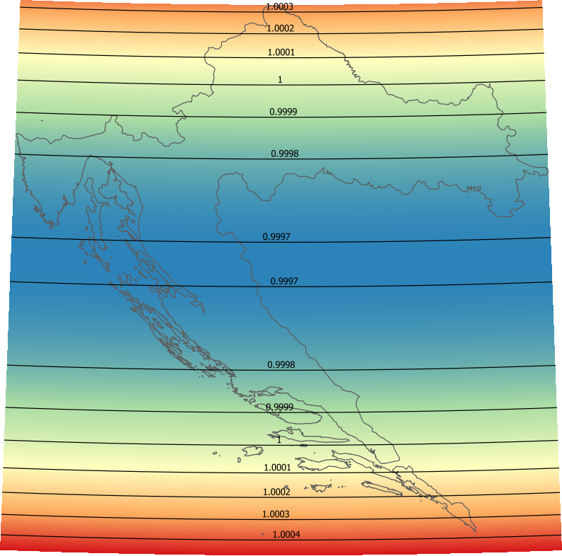

Authors: Drazen Tutic, Viktoria Duracic
Institution: University of Zagreb, Faculty of Geodesy
e-mail: dtutic@geof.hr
Date: 05/05/2016
Every map projection has distinct properties which are usually analysed by some factors.
PROJ4 can calculate them and print out if -V option is used.
In proj_api.h this function is not published, so standalone proj binary is used.
Available factors are:
Main purpose of this plugin is to visualize distortions, scales or angles in the active area, i.e. over the area where data is present. This can help one to decide whether special consideration of distortions is necessary for calculations or analysis performed with GIS operations.
Factors are calculated as raster map for project CRS which should not be geographic or geocentric.
Area for which factors are to be calculated is defined in geographic coordinates.
Some projections can't map whole spheroid. Start with smaller regions and expand as necessary.
Do not use to big raster if it is not necessary (it will take long to generate and resource problems may occur). Size of between 200 and 1000 px should be enough for most purposes.
Inverted pseudocolor spectral palette on min-max values range with raster contour extraction operation with labelled isolines are performed as default style since version 0.2 for better understanding of distribution and values of distortions and scales. User can change colours or extract isolines if default style is not appropriate.
